|
Roda JC - RBC (1-0) 9 mei 2003 |
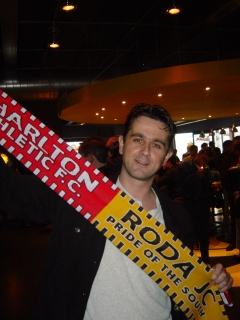
Hier is het bewijs: Roger P. is alive!
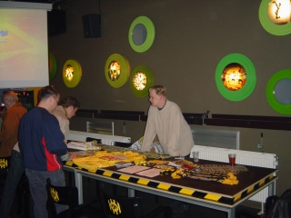
Merchandise van het FP in de K.O.
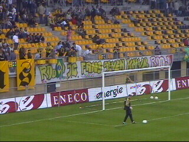
Vandaag was er een actie tegen de KNVB. Dit
n.a.v. het lukraak schuiven met speeldata omdat
enkele Naccertjes de griep hadden.
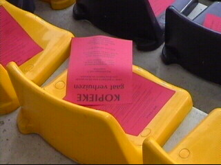
Op ieder stoeltje lag een rode kaart.
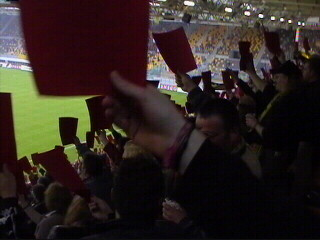
Rodasupporters trekken massaal de rode kaart.
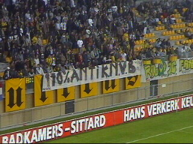
Voor alle duidelijkheid....
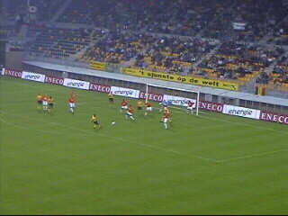
Er werd ook nog gevoetbald; in de 12e minuut
scoort Sergio 1-0.
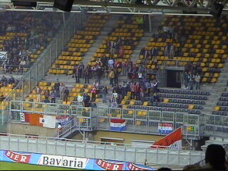
Een groot deel van de 130 RBC-supporters kwam
te laat omdat men in Maastricht werd gedropt!!!
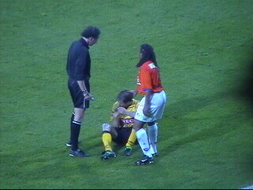
MOTM Gerrie Senden van Roda en MOTM
Nordin Wooter van RBC.
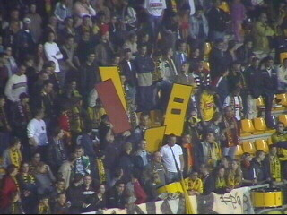
West deelde rode en gele kaarten uit. Aan wie?
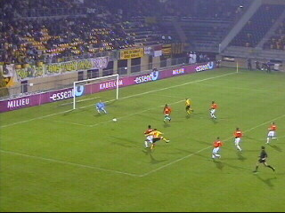
Na deze mislukte actie van Soetaers begon het
thuispubliek onbedaarlijk te fluiten wat door Tom
met afkeurende gebaren beantwoord werd.
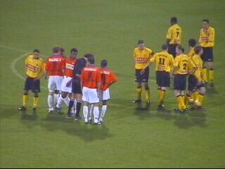
Vrije trap voor RBC.
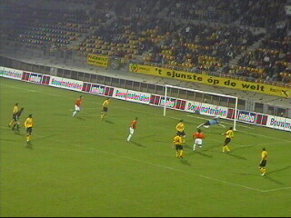
Een schot van RBC belandt op de paal. Het blijft
gelukkig 1-0.
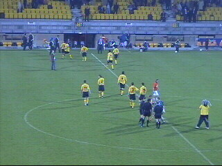
De spelers verlaten het veld zonder het publiek
te bedanken als reactie op het gefluit van het
Roda-publiek.
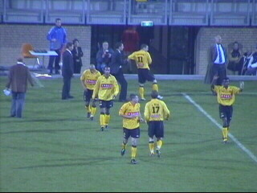
Butcher trekt Soetaers ALIGN="BOTTOM" BORDER="0">
Butcher trekt Soetaers bij de arm en wijst hem
op zijn sportieve plicht naar de supporters.
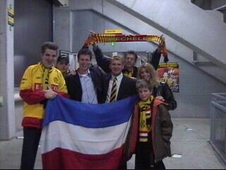
In de omloop ontmoeten we Kujovic.
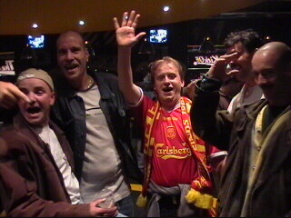
Mechelen was vandaag met 15-20 man present!
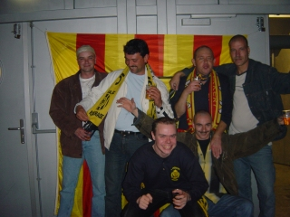
Voerendaal & guests wilden per se voor de vlag
van Mechelen poseren.
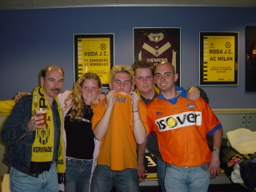
Er waren ook een aantal supporters van RBC in
de K.O. aanwezig.
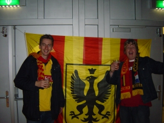
Vlaaaanderen booohoooven ;-)
© Koempels
Pleasure Dome